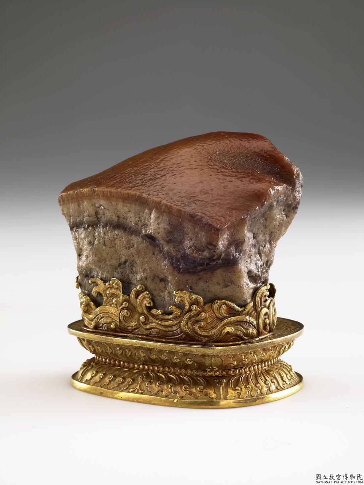

| 故宮藏品 | 藏品敘述 | 配對的文章段落 |
|---|---|---|
|
清 費以耕仕女圖 軸 |
費以耕（西元十九世紀末葉），字餘伯，烏程（今浙江吳興）人。為費丹旭（一八○一－一八五○）長子。畫承家學，兼工仕女及花鳥。本幅為何應欽先生遺贈，畫靚妝仕女捻花含笑，弱質婷婷裊裊，而裙裾飛飄，極得清靈雅淡之趣。左上方，自題五言絕句一首，書學惲壽平（一六三三－一六九○），饒有韻致。詩云：「愛濯薔薇露，凌晨折得來；低鬟猶未插，含笑傍妝臺。餘伯費以耕寫。」 藏品資訊連結 |
話說回來，天皇進膳的時候，一般都有多名女官來陪食和侍候，還有專人先試吃試毒，以保安全。除了魚類之外，還有數十碟小菜。天皇食用鯛魚時，當然不會自己挑魚刺，而是由侍候左右的女官處理，她們會用訓練有素的技巧在不破壞魚的形態下將刺全數拔出（陪食的女官在江戶時代統稱為「御末」）。 文章連結 |
|
日本 司馬江漢畫達摩 軸 |
司馬江漢（1747-1818）本名安藤峻，是德川時代後期的思想家並畫家，因鑽研從荷蘭傳入日本的天文學著作，將西方思想引入日本，並為日本西方油畫與銅版畫的先驅。此畫與本院藏〈畫羅漢〉油畫作風接近，皆為當時受西方影響下的畫作。附屬於此，顯示洋畫的由西東漸。 藏品資訊連結 |
從1543年葡萄人首先漂流到日本九州的種子島後，日本就已經開始與當時他們稱之為「南蠻人」的歐洲人開始了商業上的往來。而荷蘭人則是於1600年來到日本。而由於不同於葡萄牙和西班牙明顯的傳教意圖，荷蘭主要專注於商業活動，因此德川家康於1609年批准荷蘭在日本的貿易許可。 文章連結 |
|
 清 肉形石 |
似玉美石中，石英類的瑪瑙、碧石等，亦因為具有特殊且多樣的紋理與色彩，而經常施以巧雕。院藏名品「清 肉形石」即碧石類礦物，其紋理層層堆疊，藝匠據此天然特徵再予以加工。首先於表面細密鑽點，除營造毛孔的效果外，還使質地較為酥鬆，易於染色。其次便是將上層染成褐紅色，像是肉皮浸過醬油一般。讓明明是冷硬的石頭，卻令人聯想「東坡肉」鮮嫩多汁、入口即化的好滋味，真可以說是天人間最有默契的巧作。 藏品資訊連結 |
一直到清代中期的烹飪書《調鼎集》中，才終於出現了現代東坡肉的烹飪方式：「肉取方正一塊刮淨，切長厚約二寸許，下鍋小滾後去沫。每一斤下木瓜酒四兩（福珍亦可），炒糖色入。半爛，加醬油，火候俱到，下冰糖數塊，將湯收乾。用山藥蒸爛去皮襯底。肉每斤入大茴三顆。」至於長崎的東坡煮，則要到江戶時代晚期，才見於當時日本的儒學家羽倉簡堂1844年所寫的《饌書》之中：「東坡煮也稱之為東坡肉，是一種蘇東坡喜歡的角煮。」 文章連結 |
|
宋徽宗 紅蓼白鵝圖 軸 |
宋徽宗（1082－1135），姓趙名佶。擅長書畫，也好收藏歷代作品，遂使內府珍藏的名蹟，百倍於前朝。 本幅梅枝上棲息白頭翁二隻，其間胡蜂飛繞，下有山礬二株，並以「瘦金書」書寫款題。構圖簡潔，用筆秀瘦而內含勁力，表現冬日的清疏氣氛。對實物的仔細觀察，使線條隨物形而變化，再加上作者經心的構想，以梅幹的Ｓ型走向來展現韻律感，表達出一份超越自然實景的理想化美感。 藏品資訊連結 |
宋徽宗對花鳥畫尤其偏愛，他收藏的花鳥畫有兩千七百八十六件，占全部藏品的百分之四十四。身為端王時期，他就在府中養了大量珍禽，用來寫生；即位後，他修建「艮嶽」，集全天下的珍奇鳥獸豢養於其中。每日觀察動物的行為和植物的生長，並在畫紙上一一呈現。 文章連結 |
|
清 王鐸 草書中堂 軸 |
王鐸（西元一五九二－一六五二年），字覺斯、覺之，號十樵、嵩樵、痴菴、癡僊道人，河南孟津人。明天啟二年（一六二二）進士，入清官至大學士，諡文安。博學好古，工詩文，長繪畫，善書法。行草宗二王，正書出鍾繇，亦能自出胸臆，名重當代，與董其昌齊名。此作行筆放縱，運轉自如，筆力雄健，點畫錯綜複雜，結體欹正莫測，章法變化豐富，可謂淋漓痛快之作。此軸為張德粹先生捐贈。 藏品資訊連結 |
值得注意的是，臺靜農重新開始書藝時，先以王鐸（1593-1652）為模範，後轉向倪元璐（1593-1644）。王鐸風格酣暢奔放，相形之下，倪元璐則字距緊俏，筆鋒欹側凌厲，彷彿急欲脫離常規結構，收筆之際卻又峰迴路轉，彷彿力挽奔放的墨色。倪元璐與王鐸同為東林黨人。東林黨在崇禎時期捲土重來，政治影響力自然有助於倪、王等的書藝地位。但兩人不同之處在於：明亡王鐸降清，倪元璐則在李自成攻陷北京後自縊殉國。 文章連結 |
|
清 乾隆 茶葉末六聯瓶 |
以五個相同造形的瓶子均衡地圍著中間頸稍長的主瓶相連在一起，成為造形相當特殊的六連瓶。六個瓶肩都一般高，六個瓶底齊平、大小相同。五個外圍相連的瓶壁露出的面積相同，在五個相連瓶壁內成虛體相通無隔，中間主瓶則由肩而下至足鑽數個洞孔為實體，與外五瓶相通。六個瓶頸皆另片製做後接合而成形的。此件茶葉末釉色呈綠，口緣及頸中間具裝飾性的凸弦紋，釉薄呈黃褐色。圈足底露胎呈白帶灰黃色，圈足內有釉。在中間主瓶圈足內，以陽文印「大清乾隆年製」篆款。 在雍正、乾隆時的陶書上仍未有茶葉末釉名稱的出現。在雍正十三年唐英的(陶成紀事)中記有「仿廠官窯，有鱔魚黃、蛇皮綠、黃斑點」，而這些釉據記載為康熙時臧應選督窯時最出色的釉，至今康熙之物仍未能確定，在故宮舊藏瓷器中這類茶葉末釉有帶黃、帶綠的釉色，多為雍正、乾隆款，並有各種造形，亦有釉上描金、描銀，或做為仿銅的基礎釉。在乾隆三年五月的(乾隆記事檔)中記有接旨「明樣燒造：廠官釉六孔瓶一件」。在乾隆四年十一月十八日唐英將按樣燒造瓷器送進。這則資料是否指著這件六連瓶呢？以五個相同造形的瓶子均衡地圍著中間頸稍長的主瓶相連在一起，成為造形相當特殊的六連瓶。 藏品資訊連結 |
不像日本茶道一般有著嚴格的規定，台灣茶從香氣的享受到味道的品嚐等等流程，會依據各種不同茶的種類，自有一套禮儀。追本朔源，台灣茶的開端是從19世紀由中國移植而來的茶苗開始的，後來茶樹隨著台灣的風土環境又產生了獨自的演變進化，同時也會因發酵程度不同而產生截然不同的風味變化，是台灣茶的一大特徵。 文章連結 |